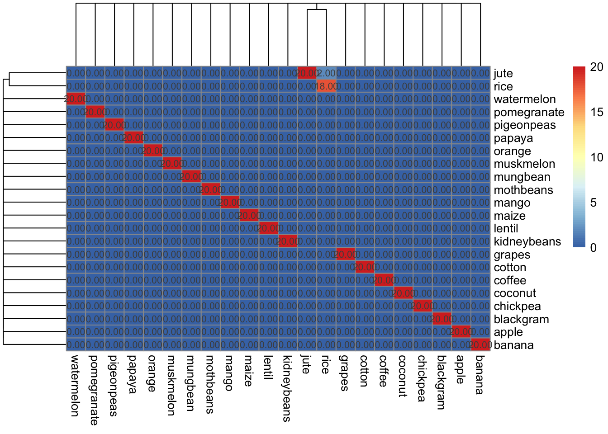
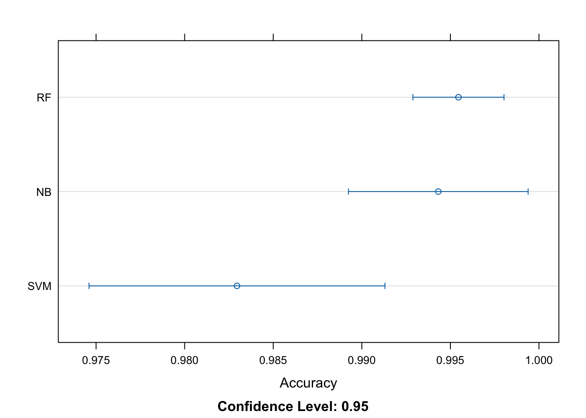

Predicting Crop Suitability with Machine Learning using R
R
Code
Analysis
Author
Kamal Chhetri
Published
October 28, 2023
Introduction
Machine learning is a rapidly evolving field that is generating intense interest because of its increasing applications in businesses and scientific research. Three popular machine learning algorithms are Random Forest (RF), Support Vector Machines (SVM), and Naive Bayes (NB). These algorithms have found applications in various fields, including, but not limited to, medical diagnosis, spam filtering, image and speech recognition, and credit scoring.
Random Forest (RF)
Random Forest is a widely used machine-learning algorithm developed by Leo Breiman and Adele Cutler. It combines the output of multiple decision trees to reach a single result. Its ease of use and flexibility have fueled its adoption, as it handles both classification and regression problems. The main idea behind RF is to construct a multitude of decision trees at training time and output the class, that is, the mode of the classes for classification or mean prediction of the individual trees for regression. Random forests generally outperform decision trees, but their accuracy is lower than gradient-boosted trees.
Support Vector Machines (SVM)
Support Vector Machines (SVMs) are a set of supervised learning methods used for classification, regression, and outliers detection. Developed at AT&T Bell Laboratories by Vladimir Vapnik and colleagues, SVMs are one of the most robust prediction methods. SVM works by finding a hyperplane in a high-dimensional space that best separates data into different classes. It’s effective in high dimensional spaces and still effective in cases where the number of dimensions is greater than the number of samples. In addition to performing linear classification, SVMs can efficiently perform a non-linear classification using what is called the kernel trick, implicitly mapping their inputs into high-dimensional feature spaces.
Naive Bayes (NB)
Naive Bayes is a probabilistic machine learning algorithm that can be used in several classification tasks. Typical applications of Naive Bayes are the classification of documents, filtering spam, prediction, and so on. This algorithm is based on the discoveries of Thomas Bayes and, hence its name. The Naïve Bayes classifier is a supervised machine learning algorithm that is used for classification tasks like text classification. It is also part of a family of generative learning algorithms, meaning that it seeks to model the distribution of inputs of a given class or category.
In this project, I used machine learning to predict the suitability of different crops for a specific area. The area in question is Blackstone, VA, and the goal was to determine which crop would be most suitable given the area’s average temperature, humidity, pH level, rainfall, and NPK values.
The Data
The data used in this project was stored in a CSV file named Crop_recommendation.csv. This file contained various parameters for different crops, including N, P, K, temperature, humidity, pH, rainfall, and a label indicating the crop type.
Before diving into the machine learning aspect of the project, I first explored the data. I used R’s head() and tail() functions to view the first and last few rows of the data. I also checked for missing or null values using R’s is.na() function.
Data Visualization
To get a better understanding of the data, I visualized it using R’s ggplot2 library. I created scatter plots to examine the relationship between different parameters and the crop label. For example, I plotted pH vs label and rainfall vs crop to see if there were any noticeable trends or patterns.
Data Processing
Next, I processed the data by separating it into feature and target variables. The feature variables included N, P, K, temperature, humidity, pH, and rainfall. The target variable was the crop label.
Model Selection
I used three different machine learning algorithms for this project: Random Forest (RF), Support Vector Machine (SVM), and Naive Bayes (NB). I trained each model on the training data and then evaluated their performance based on their accuracy.
To visualize the accuracy of each model, I created a line plot using ggplot2. This plot showed that Random Forest had the highest accuracy of prediction.
Create a data frame to store test data and predicted labels:
# See the distribution of data summary(data)
N P K temperature
Min. : 0.00 Min. : 5.00 Min. : 5.00 Min. : 8.826
1st Qu.: 21.00 1st Qu.: 28.00 1st Qu.: 20.00 1st Qu.:22.769
Median : 37.00 Median : 51.00 Median : 32.00 Median :25.599
Mean : 50.55 Mean : 53.36 Mean : 48.15 Mean :25.616
3rd Qu.: 84.25 3rd Qu.: 68.00 3rd Qu.: 49.00 3rd Qu.:28.562
Max. :140.00 Max. :145.00 Max. :205.00 Max. :43.675
humidity ph rainfall label
Min. :14.26 Min. :3.505 Min. : 20.21 Length:2200
1st Qu.:60.26 1st Qu.:5.972 1st Qu.: 64.55 Class :character
Median :80.47 Median :6.425 Median : 94.87 Mode :character
Mean :71.48 Mean :6.469 Mean :103.46
3rd Qu.:89.95 3rd Qu.:6.924 3rd Qu.:124.27
Max. :99.98 Max. :9.935 Max. :298.56
See the relationship between different parameters such as Ph vs label or precipitation vs crop:
# Ensure 'label' is a factor in both training and testing setstrainLabels <-as.factor(trainLabels)testLabels <-as.factor(testLabels)
Make predictions on the test data:
Using Random Forest:
pred_rf <-predict(model_rf, testData)# Generate confusion matricescm_rf <-confusionMatrix(pred_rf, testLabels)# Convert it to the numeric form and visualize using the heatmapcm_rf_numeric <-as.matrix(cm_rf)cm_rf_numeric[] <-as.numeric(cm_rf_numeric)pheatmap(cm_rf_numeric, display_numbers = T)
pred_nb <-predict(model_nb, testData)# Generate confusion matricescm_nb <-confusionMatrix(pred_nb, testLabels)# Convert it to a numeric matrix and creating heatmap based on this:cm_nb_numeric <-as.matrix(cm_nb)cm_nb_numeric[] <-as.numeric(cm_nb_numeric)pheatmap(cm_nb_numeric, display_numbers = T)

Calculate and print misclassification rates:
mis_rf <-1- cm_rf$overall['Accuracy']mis_svm <-1- cm_svm$overall['Accuracy']mis_nb <-1- cm_nb$overall['Accuracy']# Create a data frame to store the misclassification ratesmisclassification <-data.frame(Model =c("Random Forest", "SVM", "Naive Bayes"),Misclassification_Rate =c(mis_rf, mis_svm, mis_nb))# Print the misclassification ratesprint(misclassification)
Model Misclassification_Rate
1 Random Forest 0.004545455
2 SVM 0.018181818
3 Naive Bayes 0.004545455
# Summarize the resultsresults <-resamples(list(RF=model_rf, SVM=model_svm, NB=model_nb))summary(results)
Call:
summary.resamples(object = results)
Models: RF, SVM, NB
Number of resamples: 10
Accuracy
Min. 1st Qu. Median Mean 3rd Qu. Max. NA's
RF 0.9886364 0.9943182 0.9943182 0.9954545 0.9985795 1 0
SVM 0.9659091 0.9730114 0.9829545 0.9829545 0.9928977 1 0
NB 0.9772727 0.9943182 0.9943182 0.9943182 1.0000000 1 0
Kappa
Min. 1st Qu. Median Mean 3rd Qu. Max. NA's
RF 0.9880952 0.9940476 0.9940476 0.9952381 0.9985119 1 0
SVM 0.9642857 0.9717262 0.9821429 0.9821429 0.9925595 1 0
NB 0.9761905 0.9940476 0.9940476 0.9940476 1.0000000 1 0
# Plot the resultsdotplot(results, metric ="Accuracy")

Making Predictions:
Finally, I used the best model (Random Forest) to make predictions. Given the average temperature (21.7 - 31.7 C), average humidity (71), pH level (5), rainfall (118 cm), and NPK values (89, 41, 22) of Blackstone Area, VA, the model predicted that Maize would be the most suitable crop for this area.
# Train the modelmodel_rf <-train(trainData, trainLabels, trControl=train_control, method="rf", ntree=100)newData <-data.frame(N=89, P=41, K=22, temperature=26.7, humidity=71, ph=5, rainfall=118)prediction <-predict(model_rf, newData)print(paste("The suitable crop for Blackstone Area is:", prediction))
[1] "The suitable crop for Blackstone Area is: maize"
print(paste("The suitable crop for Blackstone Area is:", prediction))
[1] "The suitable crop for Blackstone Area is: maize"
Conclusion
This project demonstrated how machine learning can be used to predict crop suitability based on various environmental parameters. While this was just one example, this approach could be applied to any area with known parameters to help farmers make informed decisions about which crops to plant.